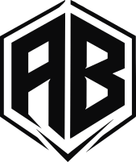

Creative designer for brands that sell.
input.png → deliveredFeed 4:5
One product photo in → a finished, on-brand campaign visual out. Drag to compare.

Campaigns, AI product imagery and motion. Open any project for the brief, the thinking, and every format it shipped in.
How I make realistic AI product imagery that a brand can actually use: the product stays exact, the world around it is built, and every idea lands in every format.